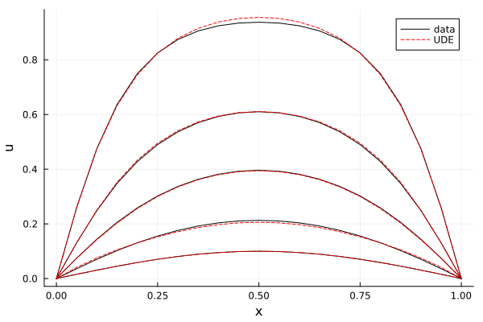
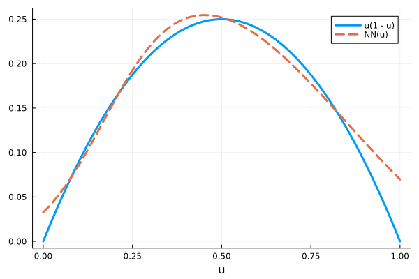

Learning a missing term with a neural network
A neural network can stand in for a term of a PDE whose form is unknown and be trained on data. This is the universal differential equation (UDE) approach; the network comes from ModelingToolkitNeuralNets.jl. To MethodOfLines the network is a callable parameter of the PDESystem, so it is discretized like any other function of the field: with a scalar field input the interior of the equation stays a single array equation on the default DAEProblem path.
Data from a known model
The ground truth is the Fisher-KPP equation
\[\frac{\partial u}{\partial t} = D \frac{\partial^2 u}{\partial x^2} + u(1 - u), \qquad x \in [0, 1], \qquad u(t, 0) = u(t, 1) = 0.\]
We pretend the reaction term u(1 - u) is unknown and keep only the simulated data. The small initial condition and the long time span make the data cover u from 0 to about 0.9; the network can only be learned where the data constrains it.
using ModelingToolkit, MethodOfLines, OrdinaryDiffEq, DomainSets
@parameters t x
@variables u(..)
Dt = Differential(t)
Dxx = Differential(x)^2
D = 0.01
domains = [t ∈ Interval(0.0, 6.0), x ∈ Interval(0.0, 1.0)]
bcs = [u(0, x) ~ 0.1 * sinpi(x), u(t, 0) ~ 0.0, u(t, 1) ~ 0.0]
disc = MOLFiniteDifference([x => 0.05], t)
@named fisher = PDESystem(Dt(u(t, x)) ~ D * Dxx(u(t, x)) + u(t, x) * (1 - u(t, x)),
bcs, domains, [t, x], [u(t, x)])
sol_true = solve(discretize(fisher, disc); saveat = 0.1)
data = sol_true[u(t, x)]
size(data)(61, 21)The UDE
SymbolicNeuralNetwork returns a symbolic callable NN and its parameter vector θ. NN(u(t, x), θ) is a vector with one entry, which replaces the reaction term. Both go into the parameter list of the PDESystem.
using ModelingToolkitNeuralNets
NN, θ = SymbolicNeuralNetwork(; n_input = 1, n_output = 1, nn_p_name = :θ)
@named ude = PDESystem(Dt(u(t, x)) ~ D * Dxx(u(t, x)) + NN(u(t, x), θ)[1],
bcs, domains, [t, x], [u(t, x)], [NN, θ])
prob = discretize(ude, disc)DAEProblem with uType Vector{Float64} and tType Float64. In-place: true
timespan: (0.0, 6.0)
u0: 21-element Vector{Float64}:
0.0
0.01564344650402309
0.030901699437494747
0.04539904997395468
0.058778525229247314
0.07071067811865475
0.08090169943749474
0.08910065241883679
0.09510565162951537
0.09876883405951378
⋮
0.09510565162951537
0.08910065241883679
0.08090169943749476
0.07071067811865475
0.05877852522924731
0.04539904997395469
0.030901699437494736
0.015643446504023103
0.0
du0: 21-element Vector{Float64}:
0.0
0.0
0.0
0.0
0.0
0.0
0.0
0.0
0.0
0.0
⋮
0.0
0.0
0.0
0.0
0.0
0.0
0.0
0.0
0.0The network parameters are prob.ps[θ]. The default initialization keeps the network output near zero, so before training the UDE is plain diffusion.
Training
The loss simulates the UDE for a candidate θ and compares it with the data. setp_oop returns a function that builds a new parameter object from a vector, and remake puts it into the problem. Gradients come from ForwardDiff through the solve, which is cheap for a few dozen network parameters; reverse-mode adjoints through the PDE solution interface are not supported yet.
using Optimization, OptimizationOptimisers
using SymbolicIndexingInterface: setp_oop
set_θ = setp_oop(prob, θ)
function loss(ps, (prob, set_θ, data))
newprob = remake(prob; p = set_θ(prob, ps))
sol = solve(newprob; saveat = 0.1, verbose = DEVerbosity(SciMLLogging.None()))
SciMLBase.successful_retcode(sol) || return Inf
return sum(abs2, sol[u(t, x)] .- data)
end
optf = OptimizationFunction(loss, AutoForwardDiff())
optprob = OptimizationProblem(optf, collect(prob.ps[θ]), (prob, set_θ, data))
res = solve(optprob, Adam(0.02); maxiters = 2000)
res.objective0.019997912855704555The loss argument is called ps rather than x because x is the spatial variable used to index the solution.
Result
The fitted UDE against the data at a few times:
using Plots
sol_fit = solve(remake(prob; p = set_θ(prob, res.u)); saveat = 0.1)
fit = sol_fit[u(t, x)]
xs = sol_fit[x]
plt = plot(xlabel = "x", ylabel = "u")
for (k, i) in enumerate((1, 11, 21, 31, 61))
plot!(plt, xs, data[i, :]; color = :black, label = k == 1 ? "data" : "")
plot!(plt, xs, fit[i, :]; color = :red, linestyle = :dash, label = k == 1 ? "UDE" : "")
end
plt
The learned term against the true one:
nn = prob.ps[NN]
us = range(0, 1; length = 50)
plot(us, us .* (1 .- us); label = "u(1 - u)", xlabel = "u", lw = 3)
plot!(us, [nn(ui, res.u)[1] for ui in us]; label = "NN(u)", lw = 3, linestyle = :dash)
The network matches the true term where the data covers u and drifts near u = 0 and u = 1, where there is little data. Training takes a few minutes.
The Brusselator tutorial does the same with two fields as network input.